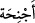

ki kol ve kanat demektir.
“__WORD__, kelimelerinin hepsi “__WORD__ kelimesinin sıfatlarıdır. Mânâsı ikişer
ikişer, üçer üçer ve dörder dörder, demektir. Yâni bu melekler sahib oldukları muhtelif
mertebelere göre çok ve değişik kanatlıdırlar. Melekler bu kanatlarla gökten yere
inerler ve tekrar göğe yükselirler. Yahut melekler sahib oldukları bu kanatlarla çok hızlı
giderler. Zira yerle gök arası ve yine gökler arası beş yüz senelik mesafedir. Melekler
ise bazen bu mesafeyi bir vakitte (ân-ı vahid) yahut “lahza” denilen sâniyelik zaman
diliminde kat’ ederler. Burada kanatların çok ve muhtelif oluşu bu meleklerin kâbiliyet
ve istidatlarının diğer bazı meleklere göre daha kâmil olduğuna işâret etmektedir. Mânâ
şöyledir. Meleklerden bazıları iki, bazıları üç ve diğer bazıları ise dört kanatlı olarak
yaratılmışlardır.
Kâşifî der ki: Mesnâ, uçmak için ikişer ikişer; sülâse, üçer üçer; rubâ’, rahat ve
sükûnet için dörder dörder, demektir.
Rivâyete göre meleklerden bir sınıf altı kanatlıdır. Bunlardan ikisi ile bedenlerini
örterler. Diğer ikisi ile Allah tarafından memur oldukları görevlere uçup giderler. Son
iki kanadı da Allah Teâlâ’dan hayâ ederek yüzlerine sarkıtırlar. Bazılarının sözlerinden
meleklerin tüm kanatlarıyla uçtukları anlaşılmaktadır. Bazı âlimler der ki: Allah Teâlâ
işlerini kullara bildirip kulların bu işlerden ibret almalarını tavsiye etmiştir. Bu işlerden
bazıları bizzat görüp müşâhede ettikleri gökler, yer ve daha başka şeylerdir. Bu işlerden
bazılarının ispat yolu ise haber ve nakildir. Bu işler zorunlu olarak yahut akıl delili ile
bilinmez. İşte melekler bu kabildendir. Meleklerin sûretleri, kanatları ve bu üçer,
dörder kanatlarla nasıl uçtukları bilinmez. Ancak genel olarak Allah Teâlâ’nın
kudretinin kemali ve hikmetinin doğruluğu bilinir.
Rivayete göre Peygamberimiz (s.a.) İsrâ ve Miraç gecesinde Cebrail (a.s.)’ı 600
kanadıyla görmüş; bunlardan iki tanesinin doğu ve batıya, yâni dünyanın bir ucundan
öbür ucuna ulaştığını müşahede etmiştir.[46] Bu ve meleklerin kanatlarının dörtten fazla
olduğunu ifâde eden diğer rivayetlerde Allah Teâlâ meleklerin kanatlarının sayısının
dört olduğunu veya daha fazla olmadığını özellikle ifâde etmeyi murad etmemiştir.
İnsânü’l-uyûn’da kaydedildiğine göre Süheylî şöyle der: Melekler hakkındaki
kanatlardan murad, melekî sıfat ve rûhânî kuvvetlerdir. Kuş kanadı gibi kanatlar
değildir. Bu kanatlardan her birinin doğu-batı arasını kaplar, diye nitelendirilmesi de bu
mânâ ile çelişmez.
Fakir (Bursevî) der ki: Bir hükmü hakiki mânâya hamletmek mümkünse, zâhir ve
hakikatten dönerek mecâzî mânâya gitmek câiz değildir. Meleklerin kanatları her ne
kadar kuş kanatları gibi değilse de onların kanatlarının varlığını ispat eden kuvvetli
rivayetler vardır. Kaldı ki Allah Teâlâ yaratıklarının sûretleriyle meleklerin suretlerini
farklı yaratmıştır. Melekler her ne kadar rûhânî olsalar da onların da latif cisimleri
vardır. Ruhların ruhânî ve nûrânî kanatları olduğu gibi latif cisimler olan meleklerin de
cismânî kanatlarının bulunmasına bir engel yoktur. Nitekim Cafer-i Tayyâr (r.a.) için de